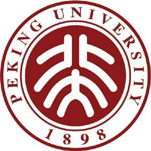
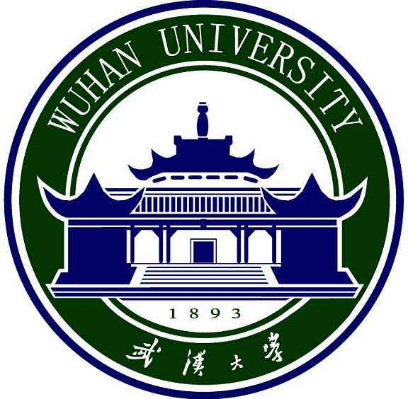
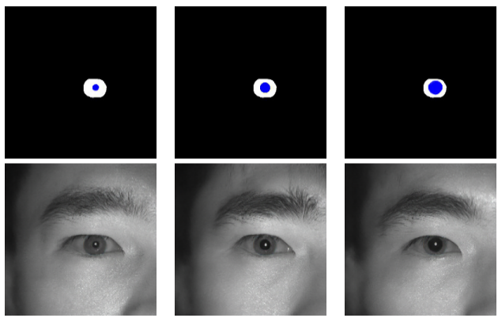
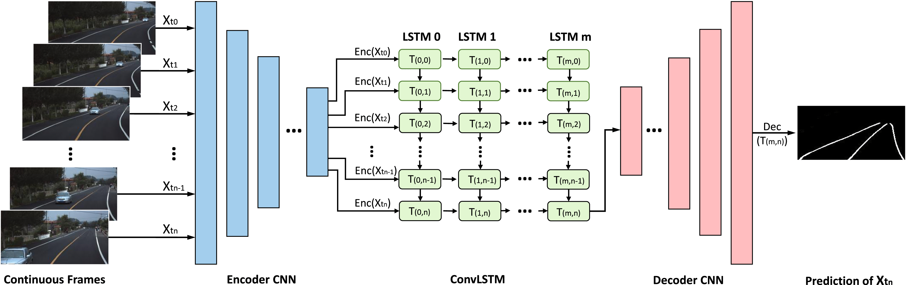
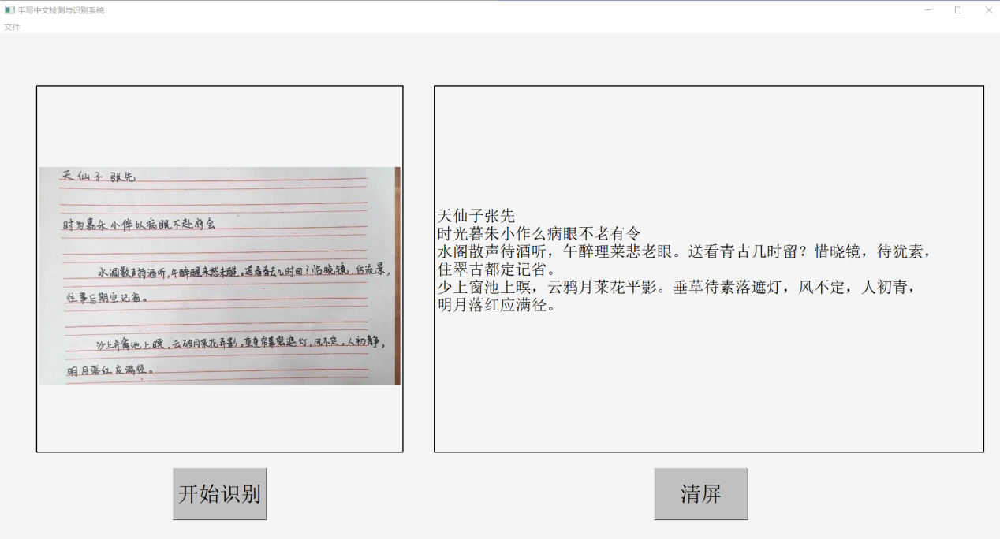

|
Qiyu Dai 戴启宇
About Me
I am currently a first-year master student in the School of Software & Microelectronics, Peking University.
Before that, I received the B.E. degree in energy chemical engineering, and a second B.E. degree in computer science, from Wuhan University in 2019.
I am looking for a full-time research intern/research assistant in 2020.
Research Interests
My current interests lie in deep learning and computer vision, including:
Image Generation (Synthesis, Translation, Editing, etc.) with Generative Models
Semantic Segmentation, Object Detection
Education
|
 |
School of Software & Microelectronics, Peking University
Sept. 2019 - present
Master Student in Computer Technology
|
|
 |
School of Power and Mechanical Engineering, Wuhan University
Sept. 2015 - July 2019
Bachelor's Degree in Energy Chemical Engineering
|
|
|
School of Computer Science, Wuhan University
Feb. 2017 - July 2019
Second Bachelor's Degree in Computer Science
|
Research Experience
 |
NIS&P Lab, Wuhan University
Oct. 2017 - June 2019
Advisor: Prof. Qin Zou
Thesis: Autonomous Driving, Semantic Segmentation, Co-Saliency Detection
|
Selected Projects|
 |
GAN-based Automatic Iris Image Generation
Machine learning course project (May 2020 - June 2020)
In this work, we aimed at modeling iris image generation as supervised image-to-image translation,
and introduce conditional constraints to perform attribute-controlled synthesis.
We built an end-to-end system based on pix2pix to handle interactive synthesis and mass-synthesis of iris data.
We also proposed an efficient and fast semi-automatic method for pre-processing iris data.
As the team leader, I am responsible for technology choices, system design, code implementation, etc., and our team
was awarded the Excellent AI Algorithm Team by Microsoft Research Asia & ByteDance Expert Committee.
|
|
 |
Lane Detection for Continuous Driving Scenes
Research project in NIS&P Lab, Wuhan University (Mar. 2018 - Nov. 2018)
For the problem that lane cannot be accurately detected using one single image in some extremely-bad driving scenarios, such as shadow, road mask degradation, and vehicle occlusion,
we propose to investigate lane detection by using multiple frames of a continuous driving scene,
and propose a new hybrid deep architecture for seamlessly integrating the DRNN with DCNN in a semantic-segmentation manner.
A new large-scale continuous driving scenes datasets are collected for quantitative evaluation, containing 12 challenging situations and rural roads situations,
which would help promote the research and development of autonomous driving.
Experiments demonstrate that the proposed method outperforms the competing methods in lane detection, especially in handling challenging situations.
[Paper]
[Codes&Data]
|
|
 |
FUTURE CAMP 2018
The talent training program, TAL AI Lab (Aug. 2018)
Be chosen for the program out of 2,500 applicants (Top 8%).
Designed a CTPN-based approach for handwritten Chinese text detection and a 3D-ResNets-based module for video motion analysis, and won the Excellent Project Award.
Built a complete end-to-end system for handwritten Chinese text detection and recognition, which converts handwritten Chinese text in images into editable messages, based on the project achievements above.
|
Publications
Skills
Languages: Mandarin Chinese (Native), English (CET-6)
Programing Languages: Python, C/C++
Tools: PyTorch, TensorFlow2, OpenCV3, LaTeX
Awards and Honors
Excellent Graduate, Wuhan University, 2019
The Beijing CM Scholarship, Wuhan University, 2018
The Goaland Scholarship, Wuhan University, 2017
Merit Student Award, Wuhan University, 2017
The Cnhili Scholarship, Wuhan University, 2016
The Relations Instruments Scholarship, Wuhan University, 2016
Excellent Student Award, Wuhan University, 2016, 2018
Excellent Student Scholarship, Wuhan University, 2016, 2017, 2018
|